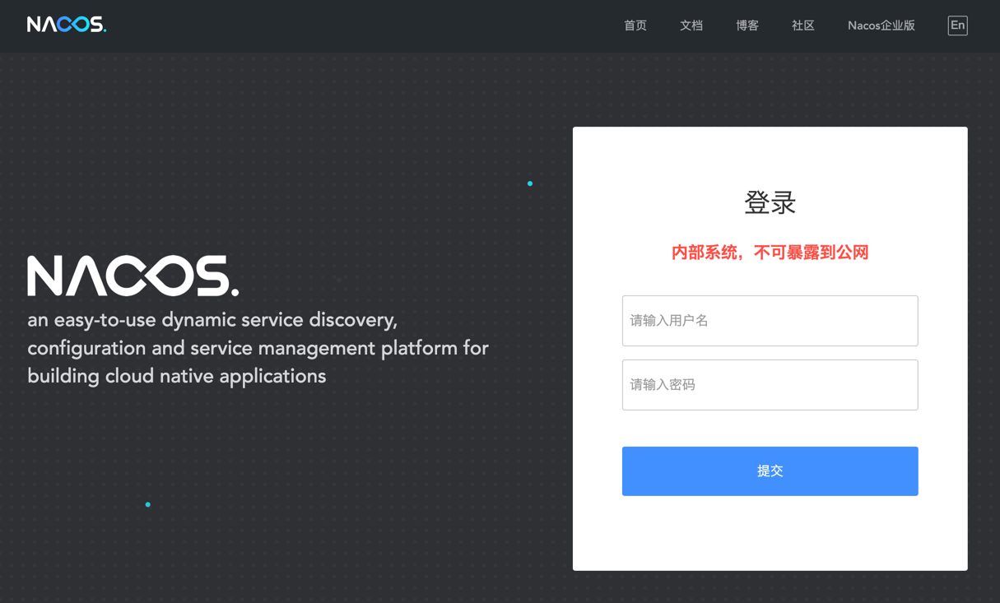

RuoYi-Cloud
若依系统
官网:
https://doc.ruoyi.vip/ruoyi-cloud/
服务治理层
1. Nacos
- 安装 MySQL 5.7
wget https://repo.mysql.com//mysql57-community-release-el7-11.noarch.rpm
yum localinstall -y mysql57-community-release-el7-11.noarch.rpm
yum install mysql-community-server --nogpgcheck
systemctl enable mysqld --now
grep -i password /var/log/mysqld.log
2025-05-18T16:03:34.257629Z 1 [Note] A temporary password is generated for root@localhost: 6t9By=/7lqsF
mysql -uroot -p'6t9By=/7lqsF'
mysql> set global validate_password_policy=0;
mysql> alter user root@'localhost' identified by 'admin123456';
- 安装 Nacos
yum install -y java-1.8.0-openjdk
wget http://repos.fedorapeople.org/repos/dchen/apache-maven/epel-7/x86_64/apache-maven-3.5.2-1.el7.noarch.rpm --no-check-certificate
yum install -y apache-maven-3.5.2-1.el7.noarch.rpm
wget https://ghfast.top/https://github.com/alibaba/nacos/releases/download/2.1.1/nacos-server-2.1.1.tar.gz
mkdir -pv /data/apps
tar -xf nacos-server-2.1.1.tar.gz -C /data/apps/
cd /data/apps/nacos/
vim conf/application.properties
server.servlet.contextPath=/nacos
server.error.include-message=ON_PARAM
server.port=8848
spring.datasource.platform=mysql
db.num=1
db.url.0=jdbc:mysql://127.0.0.1:3306/nacos?characterEncoding=utf8&connectTimeout=1000&socketTimeout=3000&autoReconnect=true&useUnicode=true&useSSL=false&serverTimezone=UTC
db.user.0=root
db.password.0=admin123456
db.pool.config.connectionTimeout=30000
db.pool.config.validationTimeout=10000
db.pool.config.maximumPoolSize=20
db.pool.config.minimumIdle=2
nacos.naming.empty-service.auto-clean=true
nacos.naming.empty-service.clean.initial-delay-ms=50000
nacos.naming.empty-service.clean.period-time-ms=30000
management.metrics.export.elastic.enabled=false
management.metrics.export.influx.enabled=false
server.tomcat.accesslog.enabled=true
server.tomcat.accesslog.pattern=%h %l %u %t "%r" %s %b %D %{User-Agent}i %{Request-Source}i
server.tomcat.basedir=file:.
nacos.security.ignore.urls=/,/error,/**/*.css,/**/*.js,/**/*.html,/**/*.map,/**/*.svg,/**/*.png,/**/*.ico,/console-ui/public/**,/v1/auth/**,/v1/console/health/**,/actuator/**,/v1/console/server/**
nacos.core.auth.system.type=nacos
nacos.core.auth.enabled=false
nacos.core.auth.caching.enabled=true
nacos.core.auth.enable.userAgentAuthWhite=false
nacos.core.auth.server.identity.key=serverIdentity
nacos.core.auth.server.identity.value=security
nacos.core.auth.plugin.nacos.token.expire.seconds=18000
nacos.core.auth.plugin.nacos.token.secret.key=SecretKey012345678901234567890123456789012345678901234567890123456789
nacos.istio.mcp.server.enabled=false
mysql -uroot -p'admin123456' -e "create database nacos default charset utf8mb4;"
mysql -uroot -p'admin123456' nacos < conf/nacos-mysql.sql
mysql -uroot -p'admin123456' -e "show tables from nacos;"
mysql: [Warning] Using a password on the command line interface can be insecure.
+----------------------+
| Tables_in_nacos |
+----------------------+
| config_info |
| config_info_aggr |
| config_info_beta |
| config_info_tag |
| config_tags_relation |
| group_capacity |
| his_config_info |
| permissions |
| roles |
| tenant_capacity |
| tenant_info |
| users |
+----------------------+
./bin/startup.sh -m standalone
http://192.168.1.67:8848/nacos/, 默认用户名密码为 nacos/nacos
